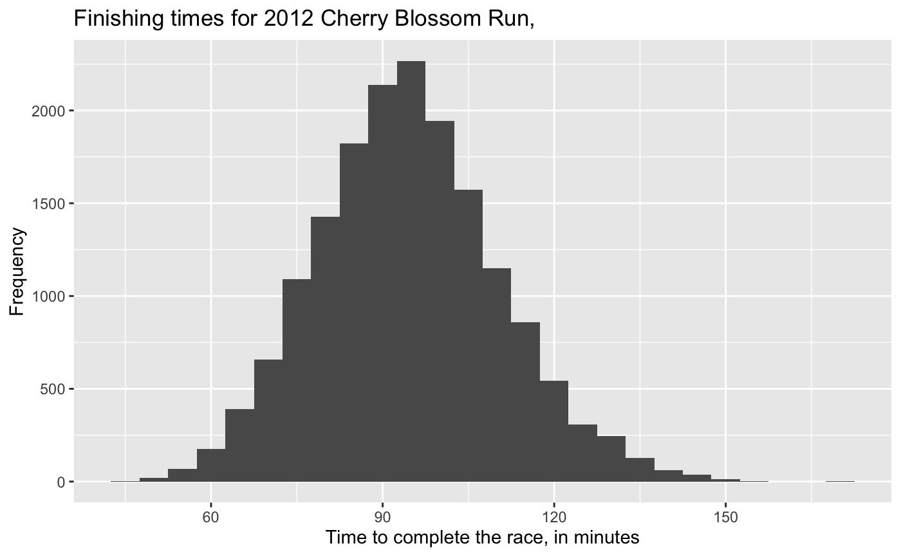
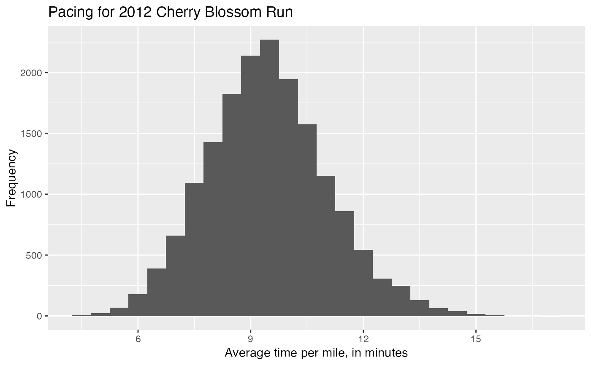

Details for all 16,924 runners in the 2012 Cherry Blossom Run, which is an annual road race that takes place in Washington, DC.
run12
A data frame with 16,924 observations on the following 9 variables.
Finishing position. Separate positions are provided for each gender.
The total run time,, in minutes.
Average time per mile, in minutes.
Age.
Gender.
Hometown city.
Hometown state (if from the US) or country.
Division place, also broken up by gender.
Total number of people in the division (again, also split by gender).
library(ggplot2) # Finishing times ggplot(run12, aes(x = time)) + geom_histogram(binwidth = 5) + labs( title = "Finishing times for 2012 Cherry Blossom Run,", x = "Time to complete the race, in minutes", y = "Frequency" )# Pacing ggplot(run12, aes(x = pace)) + geom_histogram(binwidth = 0.5) + labs( title = "Pacing for 2012 Cherry Blossom Run", x = "Average time per mile, in minutes", y = "Frequency" )